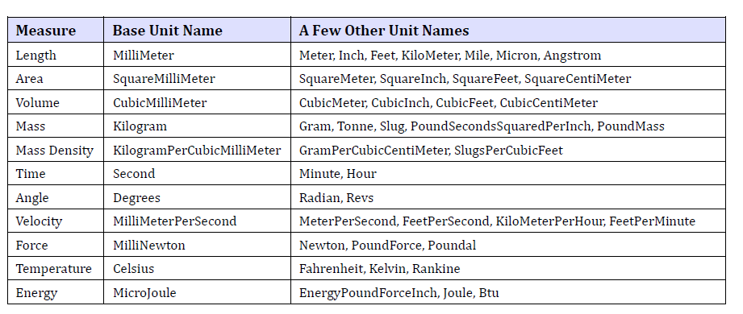

Units
The parameters of features are typically described by expressions, as discussed below. But expressions involve units, so
first we have to understand units.
In each part file, there is a UnitCollection, which has an associated collection of “measures”. Typical measures are
things like length, volume, mass, angle, or velocity. These are also called Dimensionality in the NX docs. Then each
measure has an associated collection of units, which are objects of type NXOpen.Unit. Among these units, one particular
one is singled out as the BaseUnit for that measure. For example, in a metric part, the Base Unit for the measure
“Length” will be millimeters; this is the length unit that is actually used for representing objects in the part file.
Typically, we obtain the measures and units for the UnitCollection of the work part using code like this:
using NXOpen;
namespace Units
{
public class Class1
{
public static void Main(string[] args)
{
Session theSession = Session.GetSession();
Part WorkPart = theSession.Parts.Work;
//Get the UnitCollection of the work part
NXOpen.UnitCollection unitCollection = WorkPart.UnitCollection;
//Get the measures of this UnitCollection -- "Length", "Area”, "Mass", etc.
string[] GetMeasureTypes = unitCollection.GetMeasures();
//Get the available units for the measure "Length"
NXOpen.Unit[] Units = unitCollection.GetMeasureTypes("Length");
//Get the base unit for the measure "Length"
NXOpen.Unit BaseUnit = unitCollection.GetBase("Length");
}
public static int GetUnloadOption(string args)
{
return 1;
}
}
}
Some of the Measures are listed here..
